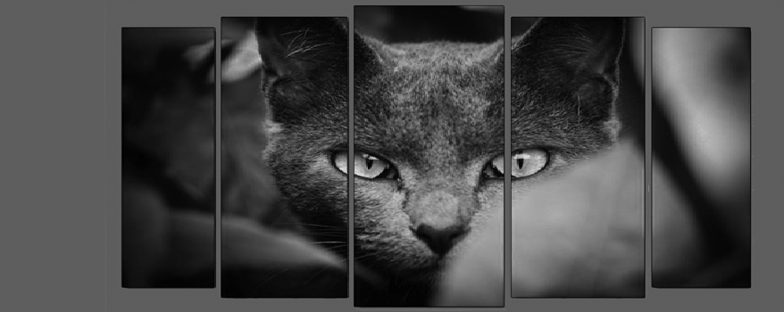

Кошка, или домашняя кошка — домашнее животное, одно из наиболее популярных «животных-компаньонов». С зоологической точки зрения домашняя кошка — млекопитающее семейства кошачьих отряда хищных. С точки зрения принятой в настоящее время биологической систематики домашняя кошка является подвидом лесной кошки. Кошки были одомашнены в глубокой древности, и приносят пользу человеку, ловя мышей и крыс. На сегодняшний день кошки населяют все земное пространство, кроме Антарктиды и Арктики.

- Кошки, как правило, правши, а коты — левши.
- Кошки не чувствуют сладкого вкуса.
- Мужчины, у которых есть коты, считаются более счастливыми в любви.
- Кошки спят около 70% своей жизни.
- Кошки производят около 100 различных звуков. Собаки — всего лишь 10.
- В течение 15 лет мэром города Талкитна, штат Аляска, был кот по кличке Стаббс.
- В оригинальной итальянской версии "Золушки" добрая крестная фея была кошкой.
- Многие эксперты считают, что кошки мурлыкают испытывая интенсивную эмоцию.
- Кошки, когда не спят, ухаживают за собой 30 % времени.
i.png)
.png)
Одна из арабских легенд, записанная историком ат-табари, повествует о том, что во время всемирного потопа ной взял с собой в ковчег и пару мышей. Мыши стали быстро размножаться, и тогда ной обратился за помощью ко льву. Царь зверей чихнул, из его ноздрей выскочили два миниатюрных льва и стали ловить мышей. То и были первые кошки. Данная легенда была широко известна в персии.
Кошки пользуются особым расположением и у мусульман. На арабском востоке пророка Магомета называют «отцом кошек». Пророк Магомет, по их древнему преданию, отвёл кошке особое и постоянное место в раю. А еще он погладил кошку по спине три раза и этим наделил кошек даром падать на четыре лапы. Аналогично к кошкам относились и турки.
 Согласно народным поверьям, кошка чувствует всевозможные перемены - как к хорошему, так и к худому. Говорят, что, наблюдая за поведением кошки, можно предсказать погоду, приход гостей, надвигающуюся болезнь или несчастье. Наверно недаром кошек всегда связывали со сверхъестественным, а кошачьи глаза называли «окнами в иной мир»